我做品牌与项目执行。在字节跳动做抖音内容评估与策略，熟悉平台规则；后在食品品牌把 4 款新品从 0 做到上市，并主导电影联名路演，从重庆一路跑到广州。
工厂端的瓜子是一种“货”，消费者手里的瓜子应该是一种“生活方式”。我们从人群画像出发，重新回答三个问题：谁在吃、在哪吃、吃完怎么办。答案最终落在一只圆形的罐子上。
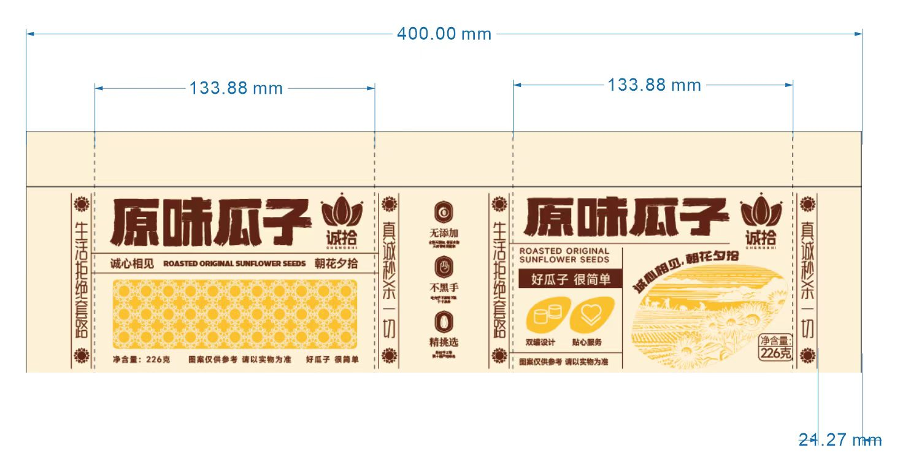
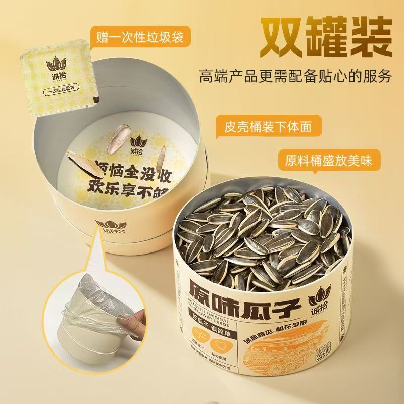
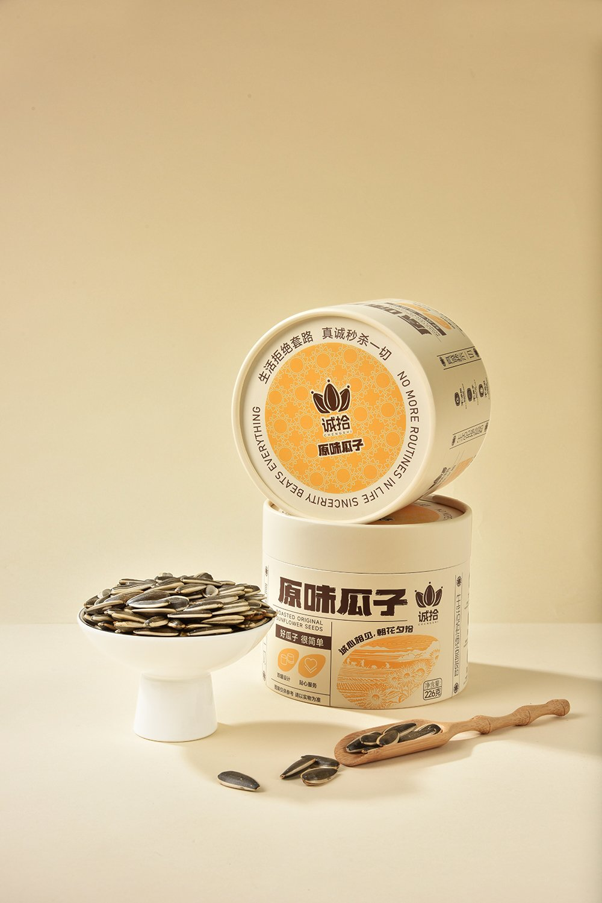
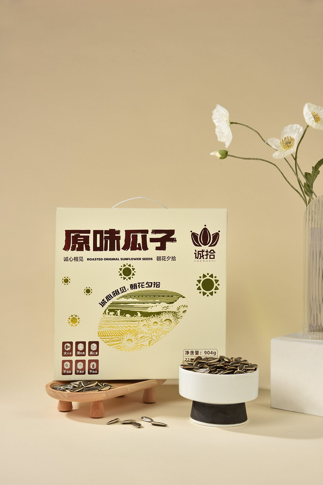
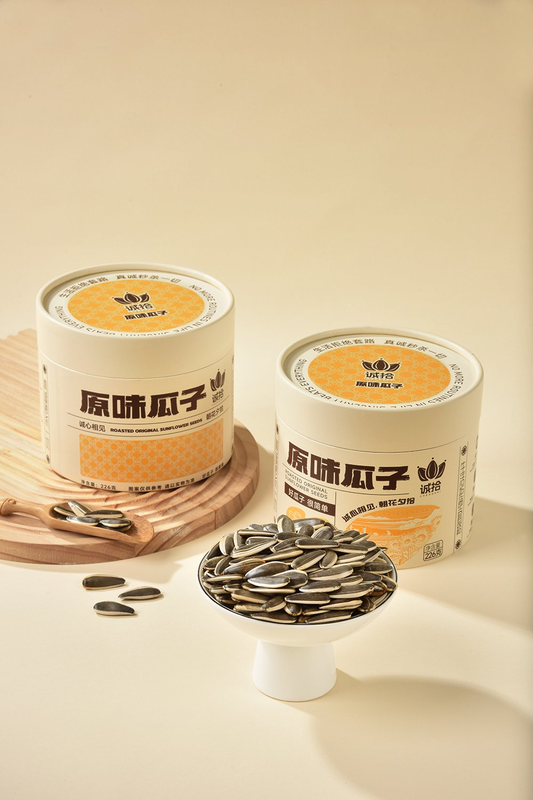
放弃市面常见的方袋与硬角盒，选用圆形罐身。没有棱角，握在手里不伤人，也让它在货架上一眼就能被认出来。
采用无害纸质包材，与同品类的塑料包装体系拉开距离。吃得放心，扔得也安心。
随罐配置垃圾袋与果皮桶式分区包装，把“嗑完一地壳”的尴尬，变成一个体面的小仪式。
包装图案取材于年轻人熟悉的文化符号，让零食成为可以拍照、分享、收藏的社交物件。
主导诚拾瓜子与电影《海底沙漠》联名路演，担任路演总控与现场主持。我们走的是品牌宣发路线：把文艺电影的观影人群聚到同一个现场，让他们在映前映后自然地接触产品。线下打开销路，线上承接互动，把“电影的观众”转化为“高端零食的用户”。
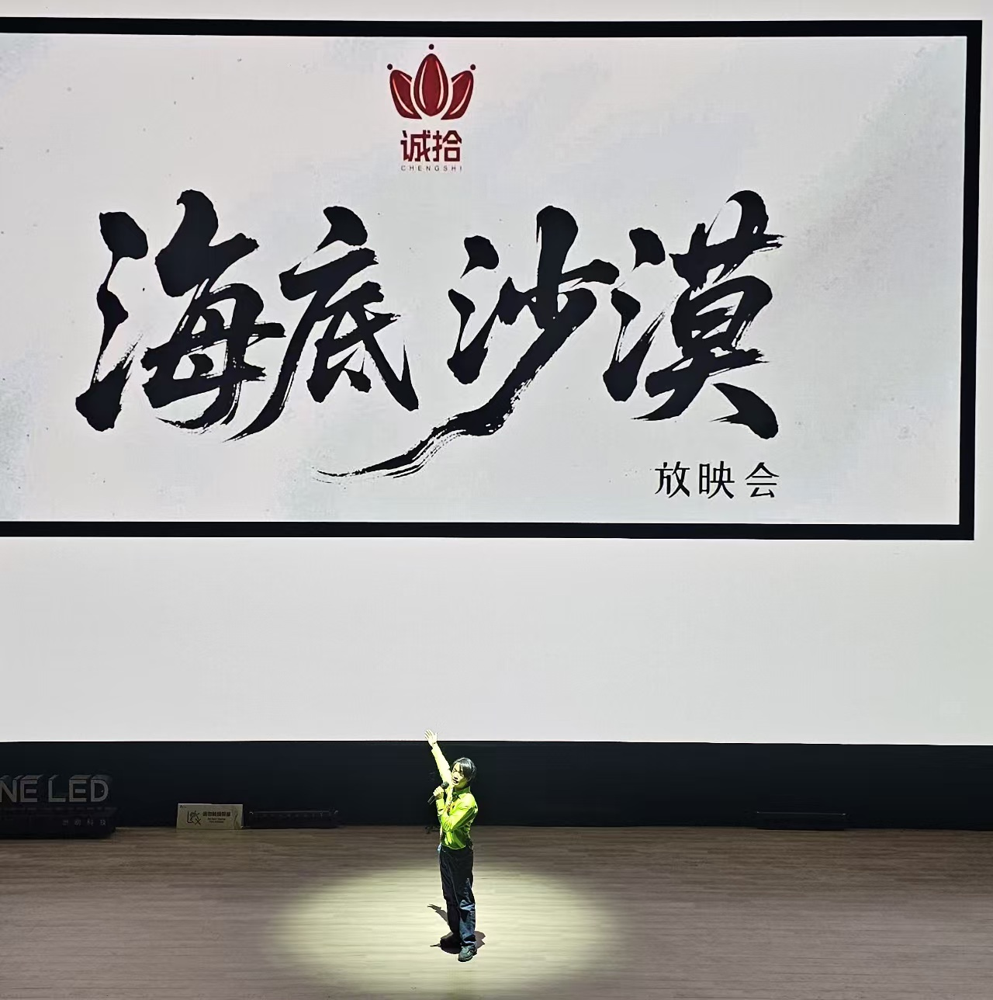
从前期策划到现场执行全链路跟进：场地商务沟通、主创团队对接、现场场控与传播风控。同步统筹小红书、抖音、B站、快手内容矩阵，用纪实叙事讲品牌故事。
从一块原料地到一个罐子，再到用户手里，每个环节我都到过现场。
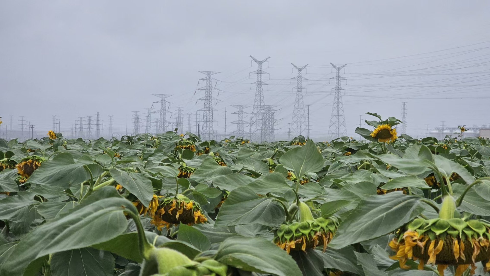
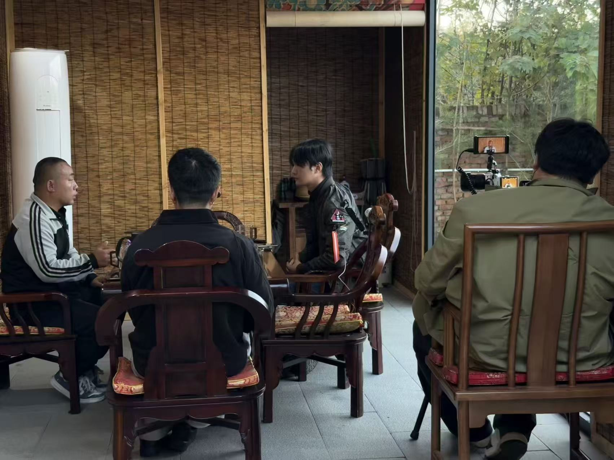
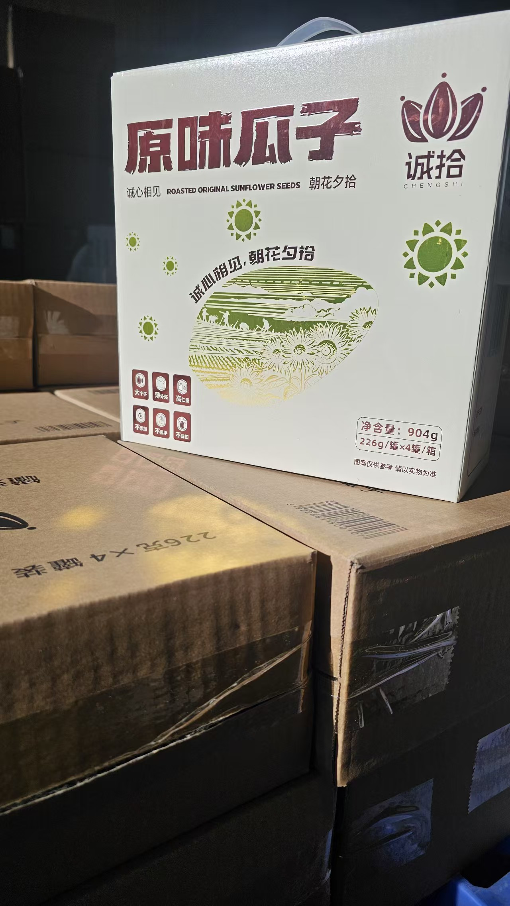
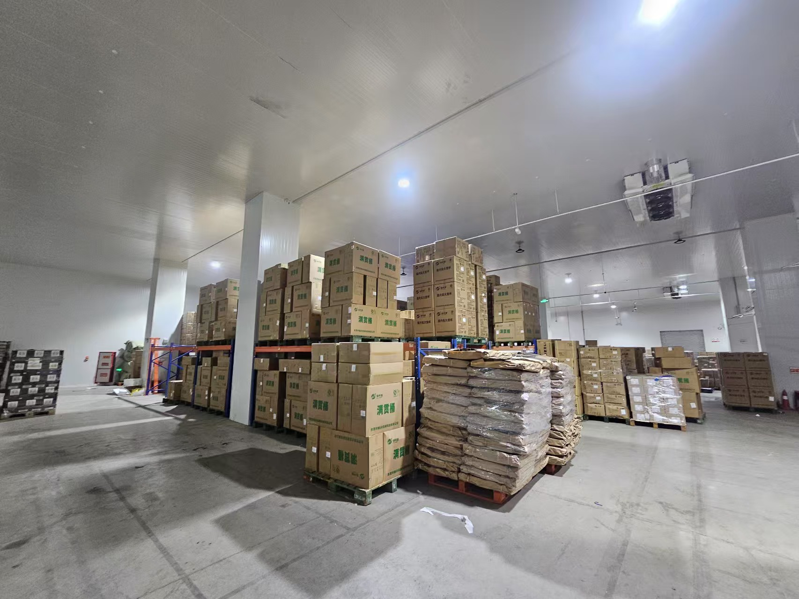
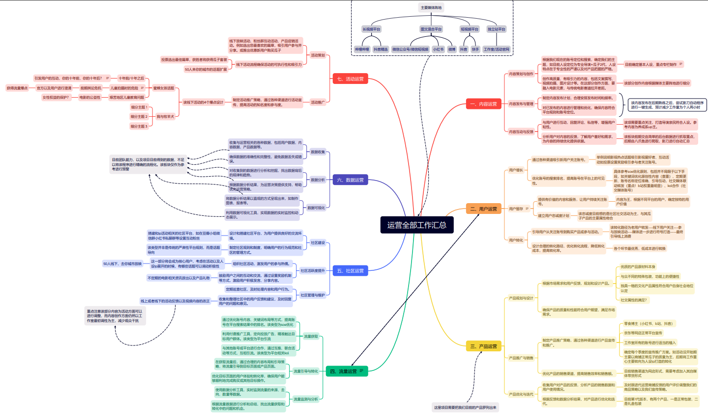
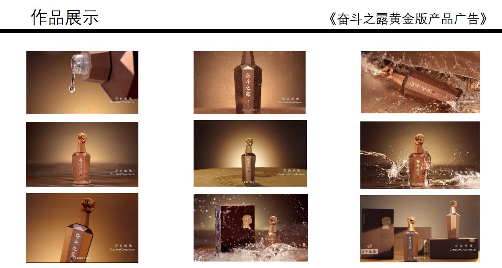
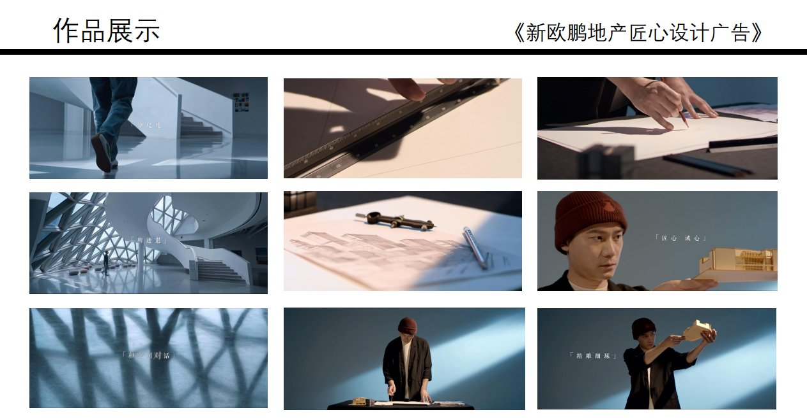
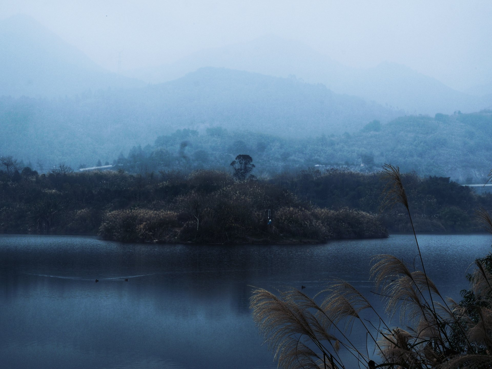